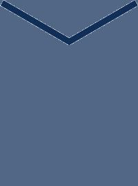
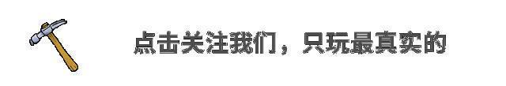
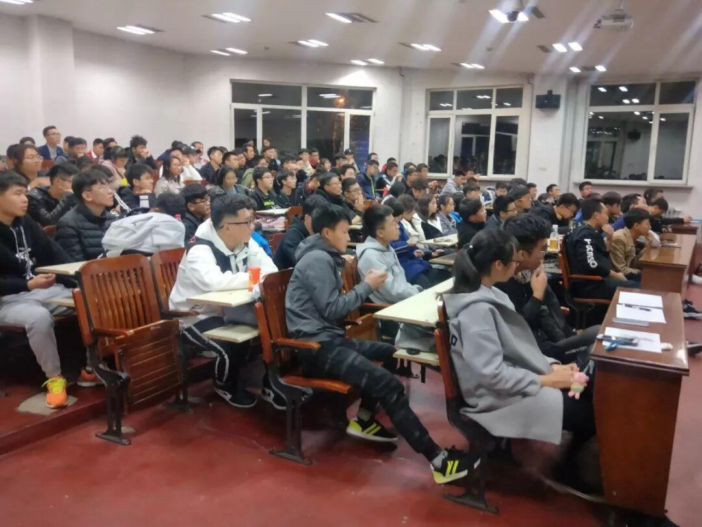
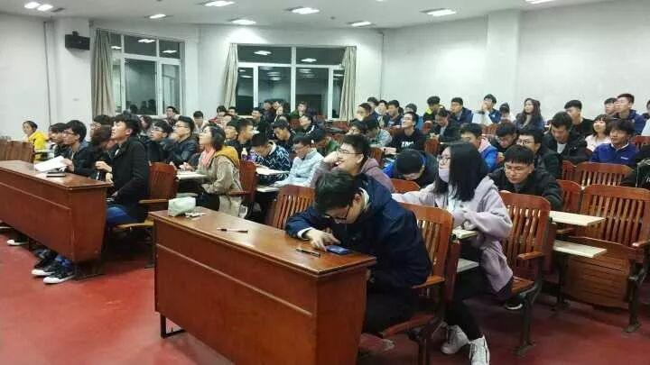
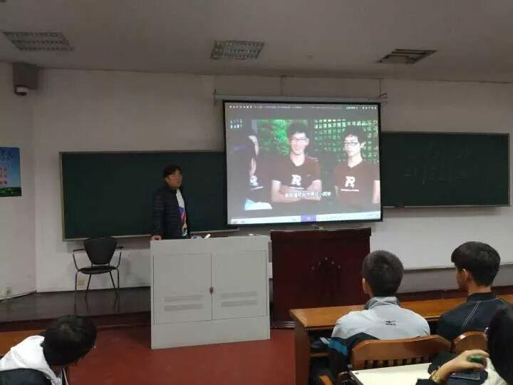
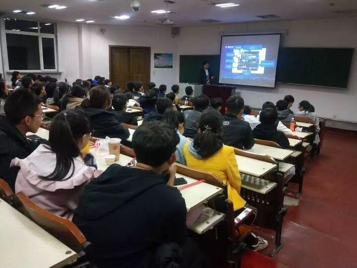
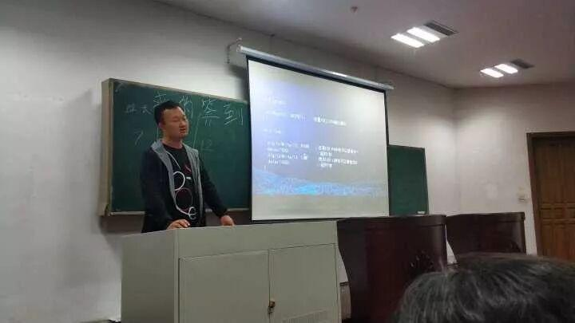
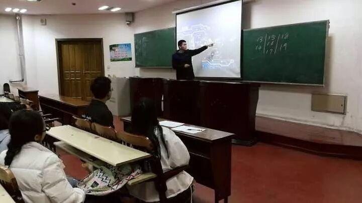
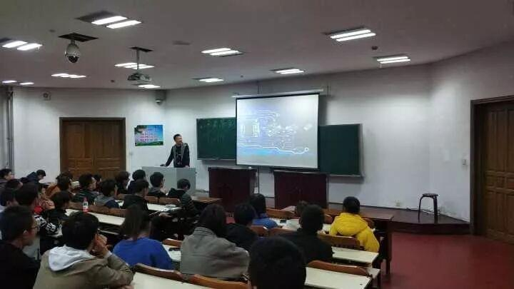
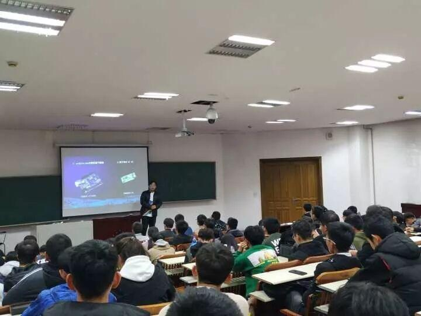

首次教学
------首次教学------


久等久等、我们终于与电协第一次教学相遇了！ 想想都好激动吖！
本次教学主要讲arduino基础结构包括如何点亮LED。
在同学们有序的进行签到之后，大家坐在教室里迫不及待地等着学长们进行教学。想着马上就能学到自己感兴趣的内容，心里是非常高兴的。


“学长快点开始教学吧！怎么调我们的胃口啊！”
“ok，教学即将开始。大家注意听啊！”
“那必须的啊！哈哈！”
"........"


学长正在为大家讲解单片机的各个结构

这次讲的是大家最感兴趣的LED.学长正在认真的向大家讲着各种代码，大家特别认真，学会了这些代码就可以自己去点亮LED了。好期待哇！







编辑：张涛
图片：电协信息部